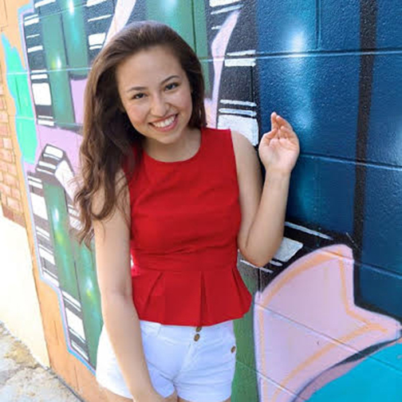

Fundraising

Fundraising ChairMelany Morgan
- Sophomore in Business Information Technology
Contact: melany@vt.edu - What did you want to be when you were younger - I wanted to be a popstar just like Britney Spears.
- Celebrity crush - Andrew Garfield
- Fave food - Rice
- Fav disney princess - Elsa duhhhh
- Dream Job - Stay at home mom jk but seriously...
- I am from Annandale, VA aka Koreatown/Asiandale. I am secretly not Filipino ;) I just have a lot Filipino friends. My hobbies include karaoking and online shopping. I am very excited to be FASA's Fundraising officer this year!
Fundraising ChairRaymark Galman
- Sophomore in Civil Engineering
Contact: raymark1@vt.edu - What was your most embarrassing moment - When I was still young living in the Philippines, I cried in the store because I was hiding from my parents and they found out so they hid from me... so when I was going to reveal myself to them they weren't there and there ensued the waterworks. lmao Another one was when I ripped my pants during Culture Show. AHA.
- Celebrity crush - Ariana Grande, Tori Kelly, any girl that can serenade me.
- Any nicknames - Ray, Mark, RayJ, LilRay, RayRay, Sweet Baby Ray(mark's) BBQ Sauce, Fratmark, Meghan Traymark, Marky Mark... and a whole lot more. Ask Allyn Melliza for the complete list.
- Choice of weapon for the apocalypse - flamethrower or machine gun or even better a bayonet that's a machine gun equipped with a flamethrower instead of a knife/spear
- Favorite quote - "Just keep swimming" ~ Dory... gotta love that fish.
- I am from Virginia Beach, VA. I like to play volleyball and tennis... not pretty good at tennis but I'm down to play anytime. I like to take pictures... i'm sorry. People like to say live in the moment, but I say, document that ish on Snapchat. Don't worry, I don't go out of control unless it's an adventure. That's it for now. Can't wait to meet you guys!